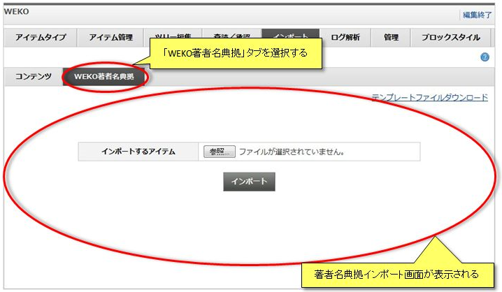

インポート
「インポート」タブをクリックするとインポート画面が表示されます。
WEKOインポート形式のファイルからアイテムを一括登録することができます。
WEKOインポート形式のファイルとは、アイテムの情報が記述されたXML(import.xml)およびアイテムのコンテンツファイルをまとめて圧縮したZIPアーカイブです。
WEKOインポート形式のファイルからアイテムを一括登録することができます。
WEKOインポート形式のファイルとは、アイテムの情報が記述されたXML(import.xml)およびアイテムのコンテンツファイルをまとめて圧縮したZIPアーカイブです。
インポート
「参照」ボタンをクリックするとローカルファイルを選択するファイル選択ダイアログが起動します。
ファイル選択ダイアログからWEKOインポート形式のファイルを指定します。
アイテムのインポート先をインデックスツリーで指定します。
アイテムのインポート先は複数指定することも可能です。
「インポート」ボタンをクリックすると、WEKOインポート形式ファイルの展開、パースが行われアイテムが一括インポートされます。
ファイル選択ダイアログからWEKOインポート形式のファイルを指定します。
アイテムのインポート先をインデックスツリーで指定します。
アイテムのインポート先は複数指定することも可能です。
「インポート」ボタンをクリックすると、WEKOインポート形式ファイルの展開、パースが行われアイテムが一括インポートされます。
インポート結果
インポートされたアイテム名およびアイテムタイプ、インポート先のインデックス名が表示されます。
【注意事項】
【注意事項】
- メタデータ構成の異なる同名のアイテムタイプ名が存在した場合、アイテムタイプ名に自動的にサフィックスを付加し、「アイテムタイプ名_XX」としてインポートされる。
サプリメンタルコンテンツ登録
WEKOインポート形式ファイル内のアイテム情報が記述されたXML(import.xml)にサプリメンタルコンテンツの情報が記述されていることでサプリメンタルコンテンツが登録できます。

著者名典拠インポート
「WEKO著者名典拠」タブをクリックすると著者目典拠インポート画面が表示されます。
TSV形式のファイルから著者を一括登録することができます。

TSV形式のファイルから著者を一括登録することができます。
著者名典拠インポート
「著者名典拠インポート」タブを選択すると著者名典拠インポート画面が表示されます。
TSV形式のファイルから著者名典拠をインポートすることができます。
インポートファイルのテンプレートをダウンロードすることができます。
TSV形式のファイルから著者名典拠をインポートすることができます。
インポートファイルのテンプレートをダウンロードすることができます。
著者名典拠インポート結果
インポートされた著者名典拠の件数が表示されます。